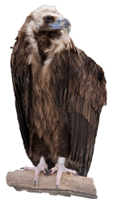

-

Чёрный гриф или бурый гриф, от др.-греч. «бородач» и лат. monachus «монах») — птица семейства ястребиных. Это очень крупные птицы, общая длина тела которых достигает 1 м, размер крыла - 85 см, вес - 7-12 кг. Несмотря на название, оперение грифа не черное, а серовато-бурое. Только у молодых особей до года свойственен черный оттенок. Голова у них слегка опушенная. Кожа, которая просвечивает сквозь редкий пух, имеет голубоватый оттенок. Клюв грифа заостренный, загнутый вниз. Бока и задняя часть шеи птицы остаются неоперенными, здесь кожа имеет бледно-розовый оттенок. Новорожденный малыш сначала покрыт желтоватым пухом, который потом сменяется пуховым нарядом серого цвета. Через полтора месяца появляется первое оперение.
-

Обыкнове́нный стервя́тник — представитель подсемейства бородачей семейства ястребиных . Единственный представитель рода Стервятники.Оперение стервятника окрашено в белый цвет с чёрными длинными перьями по краям крыльев, что особенно заметно в полёте. В области горла перья имеют желтоватый оттенок. Голова у стервятника лысая, со складками, и ярко-жёлтой, иногда даже оранжевой кожей. Такого же цвета и основание клюва, конец которого, однако, чёрный. Лапы такие же ярко-жёлтые, как и клюв. Радужная оболочка глаз красновато-коричневая, а хвост имеет клинообразную форму. Оба пола отличает тёмная, иногда совсем чёрная полоска на лице. У молодых особей оперение поначалу жёлто-коричневое и слегка пятнистое. По мере взросления оно становится всё белее. Непокрытое перьями лицо у молодняка серое, радужная оболочка чёрная. Зрелые экземпляры достигают величины от 60 до 70 см и веса от 1,5 до 2,2 кг. Размах крыльев составляет 165 см.
-
Змеея́д, или обыкновенный змеея́д, орёл-змееяд или крачун — хищная птица семейства ястребиных, отряд ястребообразные, подсемейства змееяды.Очень редкий исчезающий вид птиц, занесён в Красную книгу[2] России и Красную книгу Беларуси.Один из самых пугливых и недоверчивых по отношению к человеку пернатых хищников.Змееяд ест почти только змей, и если ему попадётся большая змея он просто съедает внутренности, разрывая змею по кускам.Общая длина — 67—72 см, размах крыльев 160—190 см, длина крыла 52—60 см. Самки крупнее самцов, но окрашены одинаково с ними. Окраска спинной стороны птицы — серовато-бурая, молодые птицы по окраске схожи со взрослыми.Населяет зону смешанных лесов и лесостепи. Гнездятся в Северо-западной Африке, в Южной и отчасти в Центральной Европе, на Кавказе, в Малой Азии, на Ближнем Востоке, Средней Азии и Казахстане, Юго-Западной Сибири, севере Монголии, на юге до Пакистана и Индии